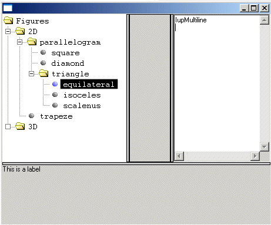

Creates a split panel control. Allows the provided control to be enclosed in a box that allows resizing. The IupSbox inherits from the IupCanvas, so all the canvas attributes and callbacks are valid. The IupSbox contains a IupZbox where all the children are inserted, and contains another IupCanvas to implement the split handler.
Ihandle* IupSbox(Ihandle* elem); [in C] iup.sbox{elem: ihandle} -> (elem: ihandle) [in Lua] sbox(elem) [in LED]elem: This function receives as parameter the element that will be enclosed in a Sbox.
This function returns the created Sbox’s identifier, or NULL if an error occurs.
DIRECTION: Indicates the direction of the resize. Possible values are:
"NORTH", "SOUTH", "EAST", "WEST".
COLOR: Changes the color of the Sbox’s thumb. The value should be given in "R G B" color style.
The controls that you want to be resized must have the EXPAND=YES attribute set.

Example 2 image